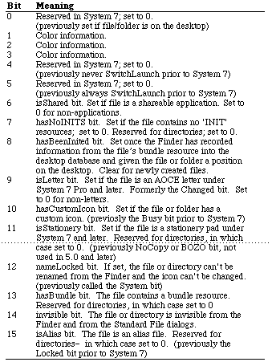

|
|
This Technote updates the meanings of several of
the bits which changed in System 7 and System 7 Pro.
[Nov 01 1993]
|
Introduction
The Finder keeps and
uses a series of file information flags for each file.
These flags are located in the fdFlags field (a word at offset $28
into an HParamBlockRec) of the ioFlFndrInfo record of a
parameter block. For directories, the flags are located in the frFlags field of
the ioDrUsrWds record of a parameter block (also offset $28). They may change
with newer versions of the Finder. Finder 7.1.1 assigns the following meanings
to the flags:

|
Note:
The MacBinary II specification instructs downloading applications to
clear bits 0, 1, 8, 9, and 10 when downloading a file in MacBinary II format.
Downloading applications should actually clear only bits 0 and 8, (the former
onDesk bit, and the hasBeenInited bit). Clearing bits 1, 9, or 10 will result
in the file being interpreted incorrectly, since bit 1 is now used to store
color information, bit 9 tells the system if the file is a letter, and bit 10
informs the Finder if the file has a custom icon.
|
Back to top References
Inside Macintosh, Macintosh Toolbox Essentials
Inside Macintosh, Volume VI, The Finder Interface
Back to top
Downloadables
|

|
Acrobat version of this Note (220K).
|
Download
|
|